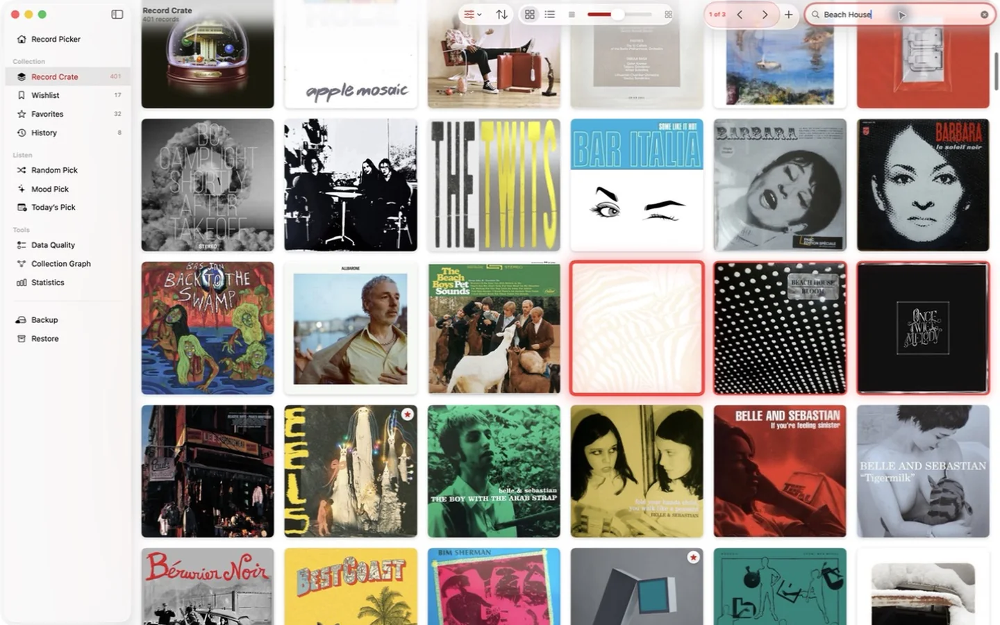
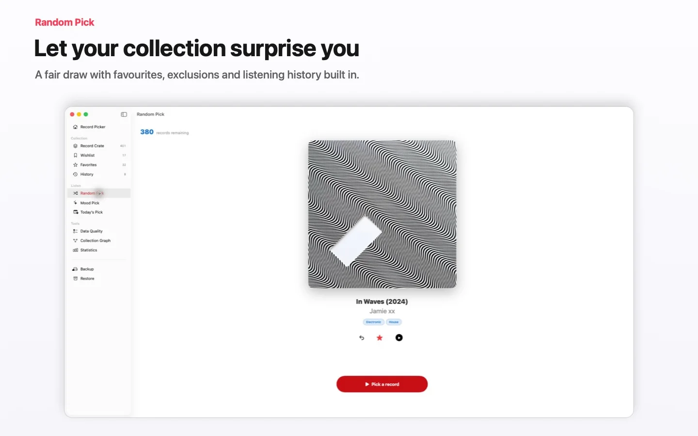

Katalog yang indah
Jelajahi koleksi sebagai mosaik sampul yang bisa diperbesar atau daftar yang bisa diurutkan. Edit bidang apa pun langsung: judul, artis, genre, tag, tahun, format, label, negara, catatan, dan sampul kustom.

Aplikasi Mac asli · Record Picker 2.3
Cara yang tenang dan native untuk membuat katalog vinil Anda dan menentukan apa yang diputar malam ini.
Record Picker membawa koleksi piringan Anda ke Mac dengan katalog cepat, mesin rekomendasi berbasis suasana, dan pengayaan ulasan kritis otomatis, semuanya dalam aplikasi SwiftUI native yang bersih.
Gratis hingga 100 catatan. Pembelian Pro satu kali akan membuka koleksi tak terbatas di Mac, iPhone, dan iPad. Tanpa iklan, tanpa pelacakan, tanpa berlangganan; perpustakaan Anda disinkronkan secara pribadi melalui iCloud.

Jelajahi koleksi sebagai mosaik sampul yang bisa diperbesar atau daftar yang bisa diurutkan. Edit bidang apa pun langsung: judul, artis, genre, tag, tahun, format, label, negara, catatan, dan sampul kustom.
Pencarian teks penuh menyertakan navigator hasil langsung, kecocokan yang disorot, dan penelusuran langkah demi langkah. Delapan bagian terhubung ke Command-1 hingga Command-8.

Ketik sebuah momen, seperti sore Minggu hujan, electro night, atau Britpop. Mood Pick merekomendasikan album yang tepat dari rak Anda dan menghindari pengulangan.


